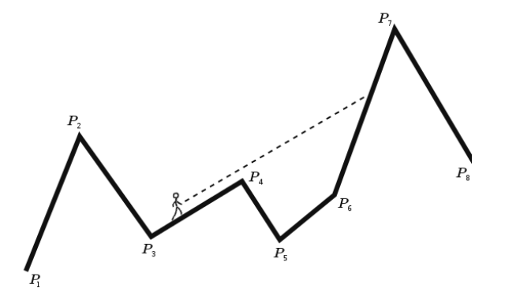

你在一片山地中行走。你面前有 $n$ 个地标 (包括峡谷和峰顶)。你在停下来休息的同时思考：你现在在地平线上看到的是哪座山？
如上图，给定一个线段构成的折线 $P_1 - P_2 - P_3 - \cdots - P_n$。这些点的 $x$ 坐标严格递增。你需要对于其中的每条线段 $P_i P_{i+1}$，求出最小的 $j > i$，使得射线 $P_i P_{i+1}$ 与线段 $P_j P_{j+1}$ 相交 (可见)。
这里规定线段为开集的。更正式地，需要找到一个最小的 $j$，满足存在线段 $P_j P_{j+1}$ 的一个开子区间 $r$，使得射线 $P_i P_{i+1}$ 与 $r$ 相交。特别地，如果 $P_i, P_{i+1}, P_j$ 共线，则 $j$ 可见当且仅当 $P_j$ 在射线 $P_i, P_{i+1}$ 的 "上方"。
第一行包含一个正整数 $T$ ($T \leq 5$)，表示数据组数。
对于每组数据，第一行包含一个正整数 $n$ ($2 \leq n \leq 10^5$)，表示折线上顶点的个数。
接下来的 $n$ 行，每行包含两个非负整数 $x_i, y_i$ ($0 \leq x_i, y_i \leq 10^9; x_i < x_{i+1}$)，表示第 $i$ 个点的坐标 $\left( x_i, y_i \right)$。
对于每组数据，输出一行，包含 $n - 1$ 个整数，第 $i$ 个整数表示最小的 $j > i$ 满足射线 $P_i P_{i+1}$ 与线段 $P_j P_{j+1}$ 相交。
首先，有一个简单的结论：对于一个 $i$，如果存在相交的 $j > i$，则最小的 $j$ 一定满足 $\mathrm{slope} \, P_i P_{i+1} < \mathrm{slope} \, P_j P_{j+1}$。
这个结论的证明比较容易，这里就不再讲了。
那具体怎么找呢？对于给定的 $i$，设 $j$ 是使得射线 $P_i P_{i+1}$ 与线段 $P_j P_{j+1}$ 相交的最小 $j$。
我们需要用到另一个引理：射线 $P_i P_{i+1}$ 与 $P_{i+1}, P_{i+2}, \cdots, P_j$ 构成的凸包不相交 (交于顶点除外)；对于 $\forall j < k \leq n$，射线 $P_i P_{i+1}$ 与 $P_{i+1}, P_{i+2}, \cdots, P_j, P_{j+1}, \cdots, P_k$ 构成的凸包相交。
这样，整个问题就有一个明显的可二分性质：
我们只需找到最小的 $i < j < n$，使得射线 $P_i P_{i+1}$ 与 $P_{i+1}, P_{i+2}, \cdots, P_j, P_{j+1}$ 所构成的凸包相交。
我们尝试着进行二分。但是具体怎样才能实现？我们需要对于每个 $i$ 和若干 $j$ 快速得到射线 $P_i P_{i+1}$ 与 $CH \left( P_{i+1}, P_{i+2}, \cdots, P_j, P_{j+1} \right)$ 的相交情况。
可以使用 (静态) 线段树来解决。
花 $O \left( n \log n \right)$ 时间维护出线段树上每个区间的 (上) 凸包， 然后我们只需使用线段树上二分的技巧判定一条射线和一个已知的凸包是否相交。
至于判断一条射线和一个已知凸包的相交情况，可以使用在凸包上二分的技巧——对于凸包上相邻两个点 $C_k, C_{k+1}$，如果 $\overrightarrow {P_i P_{i+1}} \times \overrightarrow {P_i C_k} \geq \overrightarrow {P_i P_{i+1}} \times \overrightarrow {P_i C_{k+1}}$，则说明 $C_k$ (相对直线 $P_i P_{i+1}$) 在 $C_{k+1}$ 的上方，因此我们取左边部分进行二分，否则取右边部分。
总时间复杂度 $O \left( n \log^2 n \right)$。
#include <bits/stdc++.h>
#define N 100054
#define segc int M = (L + R - 1) >> 1, lc = id << 1, rc = lc | 1
#define cross(x, y, z) (((y) - (x)) ^ ((z) - (x)))
typedef long long ll;
struct vec2 {
int x, y;
vec2 (int x0 = 0, int y0 = 0) : x(x0), y(y0) {}
vec2 * read() {scanf("%d%d", &x, &y); return this;}
inline vec2 operator - (const vec2 &B) const {return vec2(x - B.x, y - B.y);}
inline ll operator ^ (const vec2 &B) const {return (ll)x * B.y - (ll)y * B.x;}
} p[N], buf[2003731];
struct node {vec2 *_beg, *_end;} x[N * 4];
int n;
vec2 *cur, *u, *v;
bool in_convex_hull_test(const vec2 *CH, const vec2 *_end) {
int L = 0, R = _end - CH - 1, M;
for (; L < R; cross(*u, *v, CH[M]) >= cross(*u, *v, CH[M + 1]) ? R = M : (L = M + 1))
M = (L + R) >> 1;
return cross(*u, *v, CH[L]) > 0;
}
void build(int id, int L, int R) {
int i; vec2 *ret = cur;
for (i = L + 1; i <= R + 1; *ret++ = p[i++])
for (; ret > cur + 1 && cross(ret[-2], p[i], ret[-1]) <= 0; --ret);
x[id]._beg = cur, x[id]._end = cur = ret;
if (L != R) {segc; build(lc, L, M), build(rc, M + 1, R);}
}
int range(int id, int L, int R, int ql, int qr) {
if (ql <= L && R <= qr) {
if (!in_convex_hull_test(x[id]._beg, x[id]._end)) return 0;
if (L == R) return L;
}
segc, ret;
return ql <= M && (ret = range(lc, L, M, ql, qr)) ? ret : range(rc, M + 1, R, ql, qr);
}
void work() {
int i; cur = buf;
scanf("%d", &n);
for (i = 1; i <= n; ++i) p[i].read();
build(1, 1, n - 1); u = p + 1, v = p + 2;
for (i = 1; i < n - 1; ++i, ++u, ++v) printf("%d ", range(1, 1, n - 1, i + 1, n - 1));
putchar(48), putchar(10);
}
int main() {
int T;
for (scanf("%d", &T); T; --T) work();
return 0;
}
坑1：由于答案是 "线段"，因此只会在区间 $\left[ 1, n - 1 \right]$ 中，因此要对这个区间进行二分。在线段树中，向右多处理一个点的凸包。